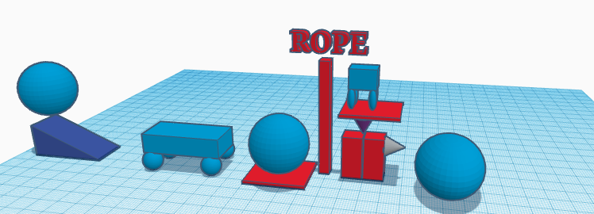
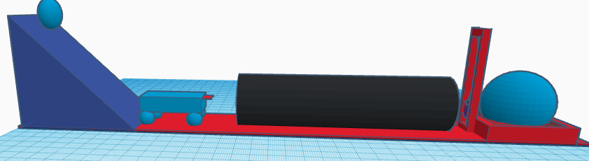

8/19/2022
Today I leaned about cloud 9 and how to code a website using html
9/2/2022 This week I learned how to use tinkercad again. I also started my rube goldberg machine.
Tinker cad was fun I even won a competition. We had to build a home appliance and I chose to build a couch
This past week we have been finishing our rube goldberg machine The first piture is of MY rube goldeberg idea the second picture is the groups idea  
This week we started to build our rube goldbeg machine and did a paper boat challenge
the rube goldberg project has been a little troublesome as things didnt go according to plan.
The paper boat challenge was a fil for my group due to havig to much weight on it.
PDF